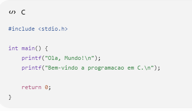
O comando printf() é usado para exibir mensagens na tela.
Solicite o nome e a idade do usuário e exiba uma mensagem de apresentação.
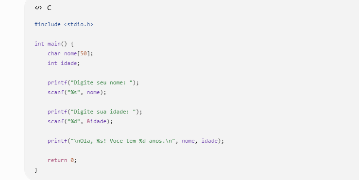
O programa cria uma variável para guardar o nome e outra para guardar a idade. O scanf() recebe as informações digitadas pelo usuário e depois o printf() utiliza esses dados para mostrar uma mensagem de apresentação.
Leia dois números inteiros e exiba a soma.
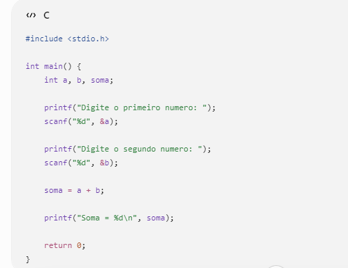
O programa recebe dois números inteiros, soma os dois valores e guarda o resultado em uma variável. Depois, mostra o resultado da soma na tela.
dois números e mostre soma, subtração, multiplicação e divisão inteira.
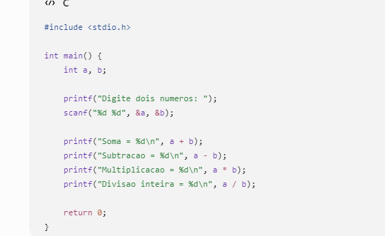
O programa recebe dois números inteiros e realiza as quatro operações básicas: soma, subtração, multiplicação e divisão. Como os números são inteiros, a divisão também será inteira.
Leia um número inteiro e mostre seu antecessor e sucessor.
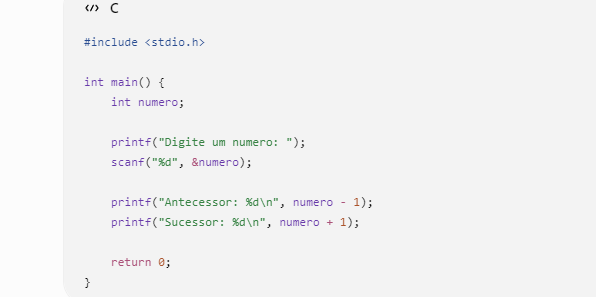
O programa recebe um número inteiro. Para encontrar o antecessor, diminui 1 do número, e para encontrar o sucessor, aumenta 1. Depois, mostra os dois resultados.
Leia duas notas (float) e calcule a média.
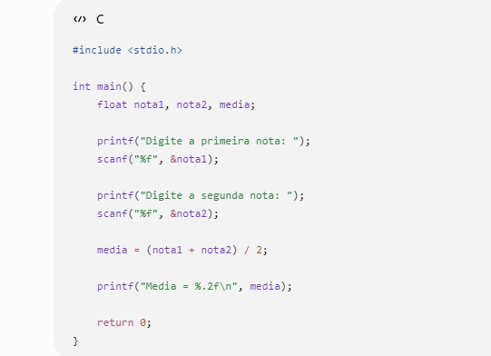
O programa recebe duas notas usando float, pois elas podem ter casas decimais. Depois, soma as duas notas e divide o resultado por 2, encontrando a média.
Leia uma temperatura em Celsius e converta usando F=(C*9/5)+32.
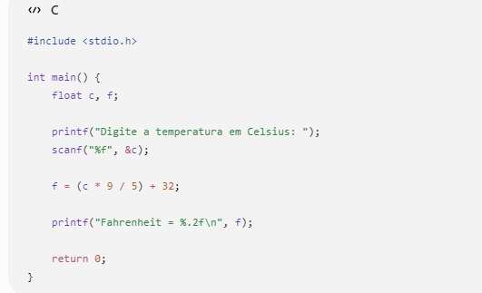
O programa recebe uma temperatura em Celsius e aplica a fórmula fornecida no exercício para convertê-la para Fahrenheit. O resultado é então mostrado na tela.
Leia base e altura e calcule a área.
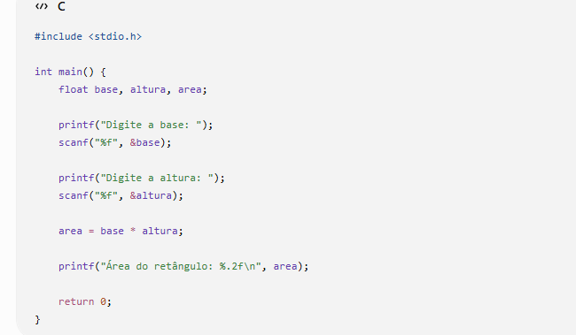
O programa recebe a base e a altura do retângulo. Para descobrir a área, multiplica a base pela altura e mostra o resultado.
Leia valor da hora e quantidade de horas trabalhadas. Calcule o salário.
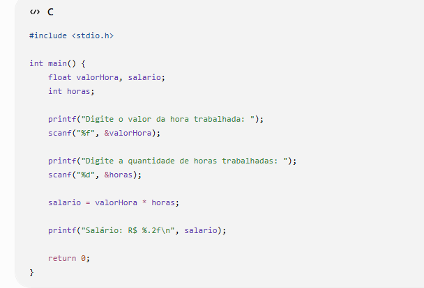
O programa recebe o valor que a pessoa ganha por hora e a quantidade de horas trabalhadas. Depois, multiplica esses dois valores para calcular o salário.
Leia dois números e mostre soma, subtração, multiplicação, divisão e resto da divisão.
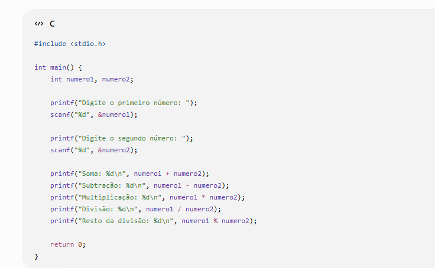
O programa recebe dois números e realiza soma, subtração, multiplicação, divisão e também calcula o resto da divisão usando o operador %.
Solicite nome, idade, nota 1 e nota 2. Exiba uma ficha do aluno contendo os dados e a média final.
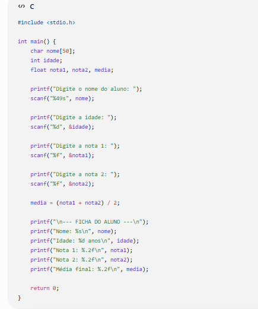
O programa recebe o nome, a idade e duas notas do aluno. Depois, calcula a média das notas e apresenta todos esses dados organizados em uma ficha na tela.